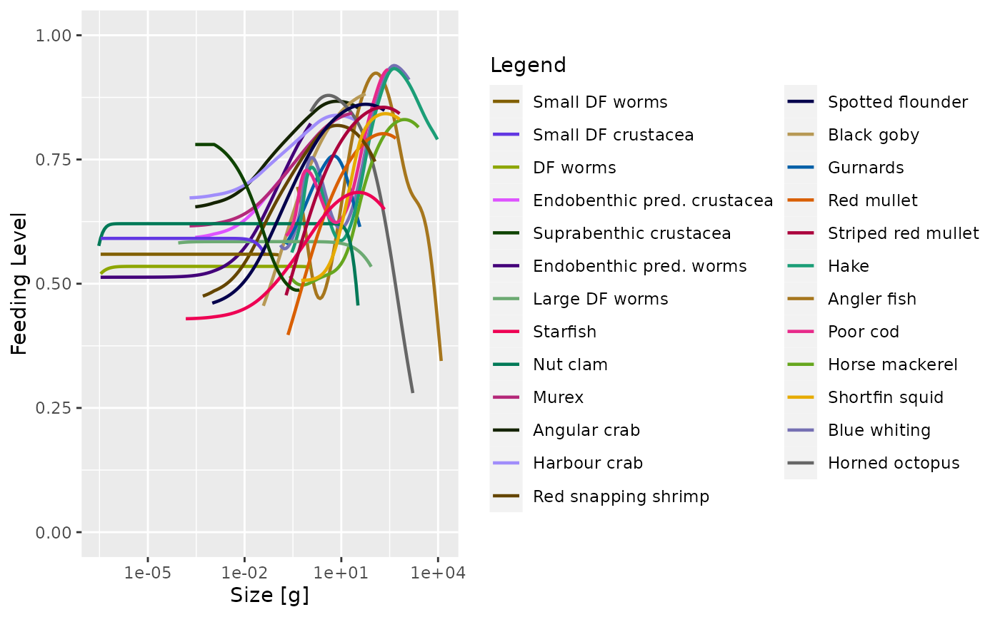

In this document we present the details of the model. The model consists of three components:
We discuss each of these in turn below. In addition to the description of the general model, the sections of this document also include “Parameter values” subsections that give numerical values for the model parameters introduced in that section. These are the parameter values we chose for describing the shelf ecosystem off the coast of Blanes in the Northwestern Mediterranean.
These parameter value sections start with a “Skip” link that allows you to jump over them to the next section of model description.
If you prefer, you can view and download a pdf version of this document.
Species
Parameter values
Skip to Size-spectrum dynamics
We model 25 species, in addition to carrion and detritus. For each of these species we have some estimates of their observed abundances. While the observed abundances of the species are not directly model parameters, we have used them to choose the reproduction parameters (discussed later) so that the steady state abundances in the model agree with these observations.
For some species the total biomass above a certain cutoff size has been observed. The following table gives the observed biomass per square meter in grams and the cutoff size in grams. Individuals smaller than the cutoff size were not observable by the method used.
| Biomass [g/m^2] | cutoff size [g] | |
|---|---|---|
| Suprabenthic crustacea | 0.029920 | 0.0000002 |
| Red mullet | 0.007353 | 0.2477958 |
| Striped red mullet | 0.004605 | 0.1985973 |
| Hake | 0.023309 | 0.2988306 |
| Angler fish | 0.007062 | 0.4560274 |
| Poor cod | 0.004895 | 0.2816911 |
| Horse mackerel | 0.014135 | 0.2816911 |
| Shortfin squid | 0.012708 | 0.1727642 |
| Blue whiting | 0.010577 | 0.1279088 |
| Horned octopus | 0.008658 | 1.2053885 |
For the other species the total number above a certain cutoff size has been observed instead:
| Numbers | cutoff size [g] | |
|---|---|---|
| Small DF worms | 279.600000 | 0.0000925 |
| Small DF crustacea | 79.600000 | 0.0000004 |
| DF worms | 257.000000 | 0.0000925 |
| Endobenthic pred. crustacea | 4.950000 | 0.0000002 |
| Endobenthic pred. worms | 199.000000 | 0.0000925 |
| Large DF worms | 95.000000 | 0.0000925 |
| Starfish | 0.118140 | 0.0141759 |
| Nut clam | 0.013090 | 0.0370770 |
| Murex | 0.063220 | 0.0190637 |
| Angular crab | 0.033650 | 0.0736550 |
| Harbour crab | 0.027150 | 0.0338993 |
| Red snapping shrimp | 0.025960 | 0.0690487 |
| Spotted flounder | 0.061470 | 0.0428709 |
| Black goby | 0.012653 | 0.0972259 |
| Gurnards | 0.023970 | 0.0843025 |
For the commercial species we also have the yearly fishery yield, given in the table below in grams per square meter per year. For these species we calibrated the model abundances so that the estimated fishing mortalities lead to these yields.
| Yield [g/m^2/yr] | |
|---|---|
| Red mullet | 0.005909 |
| Striped red mullet | 0.003158 |
| Hake | 0.019209 |
| Angler fish | 0.005017 |
| Poor cod | 0.003687 |
| Horse mackerel | 0.011020 |
| Shortfin squid | 0.006702 |
| Blue whiting | 0.008069 |
| Horned octopus | 0.005678 |
Size-spectrum dynamics
The model assumes that, to a first approximation, an individual can be characterized by its weight \(w\) and its species number \(i\) only. The aim of the model is to calculate the size spectrum \(N_i(w)\), which is the density of individuals of species \(i\) and size \(w\). The number of individuals in a size range is obtained from the density by integrating over the size range, such that \(\int_w^{w+dw}N_i(w)dw\) is the number of individuals of species \(i\) in the size interval \([w,w+dw]\). In other words: the number of individuals in a size range is the area under the number density \(N_i(w)\).
The time evolution of the number density \(N_i(w)\) is described by the McKendrick-von Foerster equation, which is a transport equation describing the transport of biomass from small to large individuals, with an additional loss term due to fish mortality:
\[ \frac{\partial N_i(w)}{\partial t} + \frac{\partial g_i(w) N_i(w)}{\partial w} = -\mu_i(w) N_i(w). \]
The individual growth rate \(g_i(w)\) is described below in the Growth section and the mortality rate \(\mu_i(w)\) is described in the Mortality section. These rates depend on the density of other fish of other sizes, as well as the carrion and detritus biomasses, making the size-spectrum dynamics non-linear and non-local in very interesting ways. The resulting effects are too complicated to disentangle by pure thought. This is where simulations with the mizer package come in.
There is no need to understand the mathematical notation used in the McKendrick-von Foerster equation to understand its origin: it just says that the rate at which the number of fish in a size bracket increases is the rate at which fish grow into the size bracket from a smaller size minus the rate at which fish grow out of it to a larger size minus the rate at which the fish in the size bracket die.
For the smallest size class, instead of a rate of growth into the size class there is a rate of reproduction of new individuals into that size class. This reproduction will be described below in the Reproduction section.
Growth
Consumers can only grow by consuming prey (including possibly carrion and detritus), discounting the losses due to metabolic processes. Predation includes a model for the predator-prey encounter rate and a model for the rate of consumption. Taking into account the rate of metabolic losses, the resulting energy intake can be partitioned in the model as energy allocated to reproduction and energy allocated to somatic growth.
Predator-prey encounter rate
The rate \(E_{i}(w)\) at which a predator of species \(i\) and weight \(w\) encounters food (mass per time) is obtained by summing over all prey species and integrating over all prey sizes \(w_p\), weighted by the selectivity factors described below and (where relevant) adding the encounter rates \(E_{C.i}\) of carrion and \(E_{D.i}\) of detritus:
\[ E_{i}(w) = \gamma_i(w) \int \sum_{j} \theta_{ij} N_j(w_p) \phi_i(w,w_p) w_p \, dw_p + E_{C.i}(w) + E_{D.i}(w). \]
The encounter rates for carrion and detritus will be described later.
The overall prefactor \(\gamma_i(w)\) sets the predation power of the predator. It could be interpreted as a search volume or as an attack rate. By default it is assumed to scale allometrically as \(\gamma_i(w) = \gamma_i\, w^{3/4}.\) In order for \(E_i(w)\) to have units of grams per year, the prefactor \(\gamma_i\) has to have a unit of \(\text{grams}^{-3/4}\) per year.
The \(\theta_{ij}\) matrix sets the interaction strength between predator species \(i\) prey species \(j\).
The size selectivity is encoded in the predation kernel \(\phi_i(w,w_p)\). For most predator species we use the lognormal predation kernel given as
\[ \phi_i(w, w_p) = \exp \left[ \frac{-(\ln(w / w_p / \beta_i))^2}{2\sigma_i^2} \right] \] if \(w/w_p\) is larger than 1 and zero otherwise. Here \(\beta_i\) is the preferred predator-prey mass ratio and \(\sigma_i\) determines the width of the kernel.
For some species we use a power-law kernel with sigmoidal cutoffs given by
\[\phi_i(w, w_p) = \frac{(w/w_p)^s}{\left(1+e^{l_l}\frac{w_p}{w}\right)^{u_l} \left(1+e^{-l_r}\frac{w}{w_p}\right)^{u_r}}. \] Here the parameters \(l_l\) and \(u_l\) determine the sigmoidal cutoff at low predator/prey mass ratio and \(l_r\) and \(u_r\) similarly determine the cutoff at large predator/prey mass ratio.
Parameter values
Skip to Consumption
The predator/prey interaction matrix has entries equal to either 0 (if the species can not interact) or 1, see @fig-interaction.
Species interaction matrix
The parameters for the predation kernels were estimated from stomach data or from the physical characteristics of the species. For the species that use a lognormal predation kernel, the parameters are given in the table below. The values for the detritivores were chosen so that they would have access to detritus throughout their life.
| beta | sigma | gamma | |
|---|---|---|---|
| Small DF worms | 1294.87 | 1.00 | 88.6271911 |
| Small DF crustacea | 120.00 | 1.00 | 20.0467566 |
| DF worms | 12000.00 | 1.00 | 35.0190243 |
| Endobenthic pred. crustacea | 10.90 | 2.00 | 0.9459572 |
| Suprabenthic crustacea | 10.00 | 2.00 | 41.6477741 |
| Endobenthic pred. worms | 100.00 | 2.00 | 11.7628322 |
| Large DF worms | 303667.00 | 1.65 | 107.4676423 |
| Starfish | 52.00 | 2.00 | 3.0460681 |
| Nut clam | 30887.00 | 0.55 | 84.3311323 |
| Murex | 50.25 | 2.00 | 20.0333270 |
| Angular crab | 10.00 | 2.00 | 9.2501407 |
| Harbour crab | 10.00 | 2.00 | 5.4169750 |
| Red snapping shrimp | 10.05 | 2.00 | 13.0726341 |
| Spotted flounder | 77.00 | 2.00 | 9.5097008 |
| Black goby | 200.00 | 2.00 | 15.7167287 |
| Red mullet | 283.00 | 1.80 | 11.3438259 |
| Striped red mullet | 283.00 | 1.80 | 14.8750504 |
| Horse mackerel | 36.00 | 1.80 | 326.6696815 |
| Shortfin squid | 10.00 | 2.00 | 452.6942402 |
| Horned octopus | 2.45 | 1.80 | 169.1917918 |
For the species that use a truncated power law predation kernel. The parameters are:
| s | l_l | u_l | l_r | u_r | gamma | |
|---|---|---|---|---|---|---|
| Gurnards | -1.0311955 | 1.104517 | 5.759042 | 6.932295 | 14.176132 | 79.17024 |
| Hake | -0.7999909 | 2.328790 | 29.533925 | 7.625678 | 26.992624 | 10020.12324 |
| Angler fish | -1.5739389 | 1.283283 | 5.642066 | 6.676509 | 5.054213 | 19031.70090 |
| Poor cod | -0.6114323 | 1.930589 | 27.643156 | 6.825227 | 32.547350 | 2527.22602 |
| Blue whiting | -0.7999909 | 2.328790 | 29.533925 | 7.625678 | 26.992624 | 8973.69865 |
Consumption
The encountered food is consumed subject to a standard Holling functional response type II to represent satiation. This determines the feeding level \(f_i(w)\), which is a dimensionless number between 0 (no food) and 1 (fully satiated) so that \(1-f_i(w)\) is the proportion of the encountered food that is consumed. The feeding level is given by
\[ f_i(w) = \frac{E_i(w)}{E_i(w) + h_i(w)}, \] where \(h_i(w)\) is the maximum consumption rate of a predator of species \(i\) and weight \(w\). By default we assume an allometric form \(h_i(w) = h_i\, w^n\) with \(n=0.7\). The unit of the coefficients \(h_i\) are \(\text{grams}^{1-n}\) per year.
The rate at which food is consumed by a predator of species \(i\) and weight \(w\) is then \[ (1-f_i(w))E_{i}(w)=f_i(w)\, h_i(w). \] Only a proportion \(\alpha_i\) of this consumed biomass is retained, while a proportion \(1-\alpha_i\) is expelled in the form of feces, which contribute to the detritus.
Parameter values
Skip to Metabolic losses
The values for the coefficients \(h_i\) in the maximum consumption rates were chosen so that the feeding level that fish experience has a reasonable value with fish being neither too starved nor totally satiated.
| h | alpha | n | |
|---|---|---|---|
| Small DF worms | 16.00 | 0.6 | 0.7 |
| Small DF crustacea | 2.82 | 0.6 | 0.7 |
| DF worms | 7.80 | 0.6 | 0.7 |
| Endobenthic pred. crustacea | 1.90 | 0.6 | 0.7 |
| Suprabenthic crustacea | 4.30 | 0.6 | 0.7 |
| Endobenthic pred. worms | 9.20 | 0.6 | 0.7 |
| Large DF worms | 38.00 | 0.6 | 0.7 |
| Starfish | 14.00 | 0.6 | 0.7 |
| Nut clam | 7.60 | 0.6 | 0.7 |
| Murex | 34.00 | 0.6 | 0.7 |
| Angular crab | 11.60 | 0.6 | 0.7 |
| Harbour crab | 10.00 | 0.6 | 0.7 |
| Red snapping shrimp | 21.00 | 0.6 | 0.7 |
| Spotted flounder | 12.00 | 0.6 | 0.7 |
| Black goby | 15.10 | 0.6 | 0.7 |
| Gurnards | 14.50 | 0.6 | 0.7 |
| Red mullet | 20.00 | 0.6 | 0.7 |
| Striped red mullet | 18.00 | 0.6 | 0.7 |
| Hake | 26.00 | 0.6 | 0.7 |
| Angler fish | 30.00 | 0.6 | 0.7 |
| Poor cod | 15.00 | 0.6 | 0.7 |
| Horse mackerel | 35.00 | 0.6 | 0.7 |
| Shortfin squid | 48.00 | 0.6 | 0.7 |
| Blue whiting | 21.00 | 0.6 | 0.7 |
| Horned octopus | 109.00 | 0.6 | 0.7 |

Metabolic losses
Some of the food consumed is used to fuel the needs for metabolism, activity and movement, at a rate \(\mathtt{metab}_i(w)\). By default this is made up out of standard metabolism, scaling with exponent \(p\), and loss due to activity and movement, scaling with exponent \(1\): \[ \mathtt{metab}_i(w) = k_{s.i}\,w^p + k_i\,w. \] The units of the coefficients \(k_{s.i}\) are \(\text{grams}^{1-p}\) per year and the units of the \(k_i\) is grams per year.
The remaining energy, if any, is then available for growth and reproduction, at the rate \[ E_{r.i}(w) = \max(0, \alpha_i f_i(w)\, h_i(w) - \mathtt{metab}_i(w)) \]
Parameter values
Skip to Investment into reproduction
| ks | p | k | |
|---|---|---|---|
| Small DF worms | 2.550000 | 0.7 | 0 |
| Small DF crustacea | 0.360000 | 0.7 | 0 |
| DF worms | 0.970000 | 0.7 | 0 |
| Endobenthic pred. crustacea | 0.240000 | 0.7 | 0 |
| Suprabenthic crustacea | 0.590000 | 0.7 | 0 |
| Endobenthic pred. worms | 1.140000 | 0.7 | 0 |
| Large DF worms | 5.450000 | 0.7 | 0 |
| Starfish | 1.810000 | 0.7 | 0 |
| Nut clam | 1.020000 | 0.7 | 0 |
| Murex | 5.100000 | 0.7 | 0 |
| Angular crab | 1.700000 | 0.7 | 0 |
| Harbour crab | 1.460000 | 0.7 | 0 |
| Red snapping shrimp | 3.050000 | 0.7 | 0 |
| Spotted flounder | 1.660000 | 0.7 | 0 |
| Black goby | 2.282506 | 0.7 | 0 |
| Gurnards | 1.860000 | 0.7 | 0 |
| Red mullet | 2.554247 | 0.7 | 0 |
| Striped red mullet | 2.828756 | 0.7 | 0 |
| Hake | 3.915779 | 0.7 | 0 |
| Angler fish | 3.900000 | 0.7 | 0 |
| Poor cod | 1.960000 | 0.7 | 0 |
| Horse mackerel | 4.250000 | 0.7 | 0 |
| Shortfin squid | 5.756755 | 0.7 | 0 |
| Blue whiting | 2.880000 | 0.7 | 0 |
| Horned octopus | 14.150000 | 0.7 | 0 |
Investment into reproduction
A proportion \(\psi_i(w)\) of the energy available for growth and reproduction is used for reproduction. This proportion changes from zero below the weight \(w_{m.i}\) of maturation to one at the maximum weight \(w_{max.i}\), where all available energy is used for reproduction. The expression is \[ \psi_i(w) = \begin{cases} \left[1+\left(\frac{w}{w_{mat}}\right)^{-U}\right]^{-1} \left(\frac{w}{w_{max}}\right)^{m-n}&w<w_{max}\\ 1&w\geq w_{max}\end{cases} \] with \(m-n = 0.3\) and \(U=10\) (which sets the steepness of the sigmoidal switch-on of reproduction at around the maturity weight \(w_{mat}\)).
Parameter values
Skip to Somatic growth
| w_mat | w_max | |
|---|---|---|
| Small DF worms | 4.50e-03 | 1.28e-01 |
| Small DF crustacea | 2.69e-03 | 4.50e-02 |
| DF worms | 2.40e-02 | 1.17e+00 |
| Endobenthic pred. crustacea | 5.47e-02 | 2.48e-01 |
| Suprabenthic crustacea | 5.47e-02 | 5.07e-01 |
| Endobenthic pred. worms | 2.40e-02 | 1.17e+00 |
| Large DF worms | 1.17e+00 | 8.83e+01 |
| Starfish | 5.30e+01 | 2.28e+02 |
| Nut clam | 2.96e-01 | 3.68e+01 |
| Murex | 7.00e+00 | 2.21e+01 |
| Angular crab | 9.14e+00 | 3.75e+01 |
| Harbour crab | 1.16e+01 | 2.97e+01 |
| Red snapping shrimp | 5.43e-01 | 1.12e+02 |
| Spotted flounder | 1.79e+01 | 2.21e+02 |
| Black goby | 2.66e+00 | 6.37e+01 |
| Gurnards | 4.15e+00 | 4.27e+01 |
| Red mullet | 2.04e+01 | 5.11e+02 |
| Striped red mullet | 3.95e+01 | 6.94e+02 |
| Hake | 2.47e+02 | 1.05e+04 |
| Angler fish | 5.57e+02 | 1.27e+04 |
| Poor cod | 2.11e+01 | 3.03e+02 |
| Horse mackerel | 8.85e+01 | 2.50e+03 |
| Shortfin squid | 5.34e+01 | 6.74e+02 |
| Blue whiting | 2.05e+01 | 1.27e+03 |
| Horned octopus | 6.56e+02 | 1.82e+03 |
Somatic growth
What is left over after metabolism and reproduction is taken into account is invested in somatic growth. Thus the growth rate of an individual of species \(i\) and weight \(w\) is \[ g_i(w) = E_{r.i}(w)\left(1-\psi_i(w)\right). \] When food supply does not cover the requirements of metabolism and activity, growth and reproduction stops, i.e. there is no negative growth.
Parameter values
Skip to Mortality
The values for the model parameters were chosen so that the resulting growth curves would be close to von Bertalanffy growth curves. The parameters were taken from the literature.
| k_vb | w_inf | t0 | a | b | |
|---|---|---|---|---|---|
| Small DF worms | 1.400 | 1.28e-01 | -0.1000 | 6.2230000 | 2.414 |
| Small DF crustacea | 0.481 | 4.50e-02 | -0.1000 | 0.3229647 | 2.975 |
| DF worms | 0.370 | 1.17e+00 | -0.1000 | 6.2230000 | 2.414 |
| Endobenthic pred. crustacea | 0.344 | 2.48e-01 | -0.1000 | 0.5074599 | 3.214 |
| Suprabenthic crustacea | 0.480 | 5.07e-01 | -0.1000 | 0.5074599 | 3.214 |
| Endobenthic pred. worms | 0.685 | 1.17e+00 | -0.1000 | 6.2230000 | 2.414 |
| Large DF worms | 0.480 | 8.83e+01 | -0.1000 | 6.2230000 | 2.414 |
| Starfish | 0.289 | 2.28e+02 | -0.1000 | 0.0951000 | 2.746 |
| Nut clam | 0.169 | 3.68e+01 | -0.1000 | 0.2960000 | 2.997 |
| Murex | 1.260 | 2.21e+01 | -0.3100 | 0.1365000 | 2.840 |
| Angular crab | 0.575 | 3.75e+01 | -0.1000 | 0.8207000 | 3.478 |
| Harbour crab | 0.575 | 2.97e+01 | -0.1000 | 0.3243000 | 3.258 |
| Red snapping shrimp | 0.495 | 1.12e+02 | 0.0300 | 0.5429000 | 2.975 |
| Spotted flounder | 0.250 | 2.21e+02 | -0.4000 | 0.0050000 | 3.100 |
| Black goby | 0.449 | 6.37e+01 | -0.1980 | 0.0150000 | 2.890 |
| Gurnards | 0.564 | 4.27e+01 | -0.1700 | 0.0070000 | 3.070 |
| Red mullet | 0.340 | 5.11e+02 | -0.1000 | 0.0080000 | 3.125 |
| Striped red mullet | 0.340 | 6.94e+02 | -0.1000 | 0.0062400 | 3.150 |
| Hake | 0.178 | 1.05e+04 | -0.0028 | 0.0066700 | 3.035 |
| Angler fish | 0.150 | 1.27e+04 | -0.0500 | 0.0244000 | 2.846 |
| Poor cod | 0.269 | 3.03e+02 | -0.3500 | 0.0075000 | 3.060 |
| Horse mackerel | 0.363 | 2.50e+03 | 0.7000 | 0.0118250 | 2.886 |
| Shortfin squid | 0.849 | 6.74e+02 | 0.0000 | 0.0188000 | 3.200 |
| Blue whiting | 0.279 | 1.27e+03 | 0.0000 | 0.0040000 | 3.154 |
| Horned octopus | 1.390 | 1.82e+03 | -0.1000 | 0.1330000 | 3.180 |
Here the parameters \(a\) and \(b\) are parameters for the allometric weight-length relationship \(w = a l^b\) where \(w\) is measured in grams and \(l\) is measured in centimetres.
Comparison of model growth curves with von Bertalanffy growth curves.
Mortality
The mortality rate \(\mu_i(w)\) of an individual of species \(i\) and weight \(w\) has four sources: predation mortality \(\mu_{p.i}(w)\), background mortality \(\mu_{ext.i}(w)\), fishing mortality \(\mu_{f.i}(w)\) and excess gear mortality \(\mu_{g.i}\), which combine as \[ \mu_i(w)=\mu_{p.i}(w)+\mu_{ext,i}(w)+\mu_{f.i}(w)+\mu_{g.i}(w). \] We will now explain each of the terms.
Predation mortality
All consumption by fish translates into corresponding predation mortalities on the ingested prey individuals. Recalling that \(1-f_j(w)\) is the proportion of the food encountered by a predator of species \(j\) and weight \(w\) that is actually consumed, the rate at which all predators of species \(j\) consume prey of size \(w_p\) is \[ \mathtt{pred\_rate}_j(w_p) = \int \phi_j(w,w_p) (1-f_j(w)) \gamma_j(w) N_j(w) \, dw. \]
The mortality rate due to predation is then obtained as \[ \mu_{p.i}(w_p) = \sum_j \mathtt{pred\_rate}_j(w_p)\, \theta_{ji}. \]
External mortality
External mortality \(\mu_{ext.i}(w)\) is independent of the abundances. By default, mizer assumes that the external mortality is a species-specific constant \(z0_i\) independent of size. The value of \(z0_i\) is either specified as a species parameter or it is assumed to depend allometrically on the maximum size: \[ z0_i = z0_{pre} w_{max.i}^{1-n}. \]
Parameter values
Skip to Fishing mortality
We use the size-independent external mortalities:
| z0 | |
|---|---|
| Small DF worms | 10.0 |
| Small DF crustacea | 0.1 |
| DF worms | 5.0 |
| Endobenthic pred. crustacea | 0.1 |
| Suprabenthic crustacea | 0.1 |
| Endobenthic pred. worms | 8.0 |
| Large DF worms | 10.0 |
| Starfish | 2.0 |
| Nut clam | 2.0 |
| Murex | 4.0 |
| Angular crab | 1.0 |
| Harbour crab | 1.0 |
| Red snapping shrimp | 2.0 |
| Spotted flounder | 0.1 |
| Black goby | 0.1 |
| Gurnards | 0.1 |
| Red mullet | 0.1 |
| Striped red mullet | 0.1 |
| Hake | 0.1 |
| Angler fish | 0.1 |
| Poor cod | 0.1 |
| Horse mackerel | 0.1 |
| Shortfin squid | 0.1 |
| Blue whiting | 0.1 |
| Horned octopus | 2.0 |
Fishing mortality
The fishing mortality rate \(\mu_{f.i}(w)\) is the product of the species- and size-dependent selectivity of the gear, the species-specific catchability and the fishing effort.
We use sigmoidal selectivity curves described by the parameters
l50 which is the lenght in centimetres where 50% of the
individuals are selected and l25, the length at wich 25%
are selected.
We choose a normalisation where the current fishing effort is taken
to be equal to 1 so that the catchability gives the fishing
mortality rate at fully selected sizes.
Parameter values
For commercial species with stock assessment, we took the values of current fishing mortality (2019) from the assessment forms. For commercial species not assessed we set fishing mortality to a value of 1.0, of the same order of that with stock assessments because in this multispecies demersal fishery all species are caught jointly and fished with similar intensity.
The selectivity parameters l50 and l25 were
derived from the MINOUW project (deliverable 2.4).
Skip to Excess gear mortality
| Species | l50 [cm] | l25 [cm] | catchability [1/year] |
|---|---|---|---|
| Starfish | 15.00 | 14.00 | 0.03 |
| Murex | 15.00 | 14.00 | 1.00 |
| Angular crab | 15.00 | 14.00 | 0.50 |
| Harbour crab | 15.00 | 14.00 | 1.00 |
| Spotted flounder | 9.21 | 7.91 | 1.00 |
| Black goby | 15.00 | 14.00 | 1.00 |
| Gurnards | 17.90 | 16.80 | 1.00 |
| Red mullet | 12.20 | 11.10 | 1.47 |
| Striped red mullet | 12.20 | 11.10 | 1.47 |
| Hake | 16.90 | 15.80 | 1.74 |
| Angler fish | 15.00 | 13.50 | 1.13 |
| Poor cod | 8.74 | 7.60 | 1.00 |
| Horse mackerel | 15.90 | 14.50 | 1.00 |
| Shortfin squid | 15.00 | 14.00 | 1.00 |
| Blue whiting | 19.20 | 17.80 | 1.72 |
| Horned octopus | 15.00 | 14.00 | 1.00 |
The remaining species experience no fishing mortality: Small DF worms, Small DF crustacea, DF worms, Endobenthic pred. crustacea, Suprabenthic crustacea, Endobenthic pred. worms, Large DF worms, Nut clam, Red snapping shrimp.
Excess gear mortality
The fishing mortality only includes individuals that are hauled onto
the fishing vessel. Fishing gear also causes mortality among individuals
that encounter the gear but are not retained by it. This mortality is
assumed not to be size-specific. There is a species parameter called
gear_mort that gives the mortality rate of an individual
imposed by the fishing gear. The part of this gear mortality that is not
fishing mortality (i.e., the part where the individuals are not taken up
to the fishing vessel but left dead in the sea) we denote as the excess
gear mortality. \[
\mu_{g.i} = \max{\left(\mathtt{gear\_mort}_i - \mu_{f.i}(w), 0\right)}
\]
This excess gear mortality contributes to the carrion production.
Parameter values
Skip to Reproduction
| gear_mort | |
|---|---|
| Small DF worms | 0.0 |
| Small DF crustacea | 0.0 |
| DF worms | 0.2 |
| Endobenthic pred. crustacea | 0.2 |
| Suprabenthic crustacea | 0.2 |
| Endobenthic pred. worms | 0.2 |
| Large DF worms | 0.4 |
| Starfish | 0.6 |
| Nut clam | 0.4 |
| Murex | 0.6 |
| Angular crab | 0.6 |
| Harbour crab | 0.6 |
| Red snapping shrimp | 0.2 |
| Spotted flounder | 0.8 |
| Black goby | 1.0 |
| Gurnards | 1.0 |
| Red mullet | 1.0 |
| Striped red mullet | 1.0 |
| Hake | 1.0 |
| Angler fish | 1.0 |
| Poor cod | 1.0 |
| Horse mackerel | 1.0 |
| Shortfin squid | 1.0 |
| Blue whiting | 1.0 |
| Horned octopus | 1.0 |
Reproduction
Energy invested into reproduction
The total rate of investment into reproduction (grams/year) is found by integrating the contribution from all individuals of species \(i\), each of which invests a proportion \(\psi_i(w)\) of their consumption. This total rate of energy investment can then be converted to a rate of production of offspring \(R_{p.i}\) (numbers per year): \[ R_{p.i} = \frac{\epsilon_i}{2 w_{min.i}} \int N_i(w) E_{r.i}(w) \psi_i(w) \, dw. \] Here the total rate of investment is multiplied by an efficiency factor \(\epsilon\) and then dividing by the offspring weight \(w_{min}\) to convert the energy into number of offspring. The result is multiplied by a factor \(1/2\) to take into account that only females contribute directly to offspring.
Note that for species that have a pelagic phase the size \(w_{min}\) is the size at which the offspring join the benthic ecosystem.
Density-dependence in reproduction
Three important density-dependent mechanisms widely assumed in fisheries models are automatically captured in the mizer model that lead to an emergent stock-recruitment relationship:
- High density of spawners leads to a reduced food income of the spawners and consequently reduced per-capita reproduction.
- High density of larvae leads to slower growth of larvae due to food competition, exposing the larvae to high mortality for a longer time, thereby decreasing the survivorship to recruitment size.
- High density of fish leads to more predation on eggs and fish larvae by other fish species or by cannibalism.
However there are other sources of density dependence that are not explicitly modelled mechanistically in mizer. An example would be a limited carrying capacity of suitable spawning grounds and other spatial effects. This requires additional phenomenological density dependent contributions to the stock-recruitment. In mizer this type of density dependence is modelled through constraints on egg production and survival. The default functional form of this density dependence is represented by a reproduction rate \(R_i\) (numbers per time) that approaches a maximum as the energy invested in reproduction increases. This is described by the common Beverton-Holt type function used in fisheries science:
\[ R_i = R_{\max.i} \frac{R_{p.i}}{R_{p.i} + R_{\max.i}}, \] where \(R_{\max.i}\) is the maximum reproduction rate of species \(i\).
Parameter values
Skip to Carrion
The reproduction parameters \(\epsilon_i\) and \(R_{max.i}\) are not directly observable. The values were instead chosen so as to produce steady-state abundances of the species that are in line with observations and to give reasonable values for the reproduction level.
The next table gives the steady-state reproduction level which is defined as the ratio between the actual reproduction rate \(R_i\) and the maximal possible reproduction rate \(R_{\max.i}\).
| w_min | erepro | R_max | reproduction_level | |
|---|---|---|---|---|
| Small DF worms | 3.00e-07 | 0.0063626 | 1.893927e+04 | 0.5 |
| Small DF crustacea | 3.00e-07 | 0.0015788 | 6.100115e+02 | 0.5 |
| DF worms | 3.00e-07 | 0.0173872 | 1.284423e+04 | 0.5 |
| Endobenthic pred. crustacea | 2.95e-04 | 0.1289877 | 6.526283e+00 | 0.5 |
| Suprabenthic crustacea | 2.95e-04 | 0.0888460 | 3.285699e+00 | 0.5 |
| Endobenthic pred. worms | 3.00e-07 | 0.0387434 | 1.712897e+04 | 0.5 |
| Large DF worms | 8.74e-05 | 0.0836411 | 2.325895e+03 | 0.5 |
| Starfish | 1.50e-04 | 0.0341090 | 1.544220e+00 | 0.5 |
| Nut clam | 3.00e-07 | 0.0002008 | 3.533907e-01 | 0.5 |
| Murex | 1.72e-04 | 0.0009031 | 9.095296e-01 | 0.5 |
| Angular crab | 2.58e-04 | 0.0009825 | 2.565134e-01 | 0.5 |
| Harbour crab | 1.72e-04 | 0.0014560 | 2.099287e-01 | 0.5 |
| Red snapping shrimp | 5.06e-04 | 0.0030855 | 3.931260e-01 | 0.5 |
| Spotted flounder | 9.95e-04 | 0.0072108 | 3.562727e-01 | 0.5 |
| Black goby | 3.82e-02 | 0.0306382 | 4.638050e-02 | 0.5 |
| Gurnards | 1.93e-01 | 0.1314751 | 6.647330e-02 | 0.5 |
| Red mullet | 2.21e-01 | 0.2452506 | 2.750800e-03 | 0.5 |
| Striped red mullet | 1.93e-01 | 0.3716910 | 1.410900e-03 | 0.5 |
| Hake | 2.90e-01 | 0.2546027 | 1.800800e-03 | 0.5 |
| Angler fish | 4.35e-01 | 0.0784832 | 1.533000e-04 | 0.5 |
| Poor cod | 1.93e-01 | 0.5456732 | 3.478200e-03 | 0.5 |
| Horse mackerel | 2.53e-01 | 0.0241581 | 6.978000e-04 | 0.5 |
| Shortfin squid | 5.70e-01 | 0.0115574 | 2.351000e-04 | 0.5 |
| Blue whiting | 1.13e-01 | 0.0770905 | 2.091100e-03 | 0.5 |
| Horned octopus | 1.12e+00 | 0.0705482 | 3.413000e-04 | 0.5 |
Carrion
Carrion (consisting of the dead individuals that have not yet decomposed) is an important component of the ecosystem, providing food for scavenger species. Feeding on carrion by scavengers is not size-based. Scavengers can feed on carrion of any size. Therefore we do not need to describe the carrion by a size spectrum but only need to describe its total biomass \(B_C\).
The rate of change in the total carrion biomass is simply the difference between the rate at which carrion biomass is produced and the rate at which it is consumed, so \[ \frac{dB_C}{dt}=p_C - c_C\,B_C. \] We will discuss the production rate \(p_C\) and the consumption rate \(c_CB_C\) below.
Parameter values
In the steady state the total carrion biomass per square meter is \(B_C = 0.04651\) grams. This was chosen so that the expected lifetime for the carrion biomass, i.e., the inverse of the mass-specific carrion consumption rate, is equal to 1 day.
Carrion consumption
Carrion is consumed by scavengers, but also decomposed by bacteria and other processes. The rate at which carrion biomass is consumed is assumed to be proportional to the available carrion biomass. The proportionality factor \(c_C\), which we refer to as the “mass-specific consumption rate”, has one component that depends on the abundance of consumers and a constant component \(d_C\) representing the mass-specific rate of decomposition.
For each consumer species \(i\), a parameter \(\rho_i\) determines the rate at which individuals of that species encounter carrion biomass. The rate is assumed to scale with the size of the predator raised to an allometric exponent \(n\) which is taken to be the same as the scaling exponent of the maximum intake rate for consumers, \[ E_{i.C}(w)=\rho_i\, w^n\,B_C. \]
Finally, satiation of the consumers is taken into account via their feeding level \(f_i(w)\) that was described in the section on consumption. This gives the mass-specific carrion consumption rate \[ c_C = \sum_i\int\rho_i\, w^n N_i(w) (1-f_i(w))\,dw + d_C. \] where \(d_C\) is the mass-specific rate of decomposition.
Parameter values
Skip to Carrion production
The value of the mass-specific rate of decomposition is \(d_C=\) 233.1173648 per year. This was chosen so that the production and consumption are equal for the chosen steady state abundances.
The parameters \(\rho_i\) have units of \(g^{-n}\) per year. They are non-zero only for species that do at least some scavenging.
| rho | |
|---|---|
| Endobenthic pred. crustacea | 52.23233 |
| Suprabenthic crustacea | 41.18318 |
| Endobenthic pred. worms | 107.00687 |
| Starfish | 200.89358 |
| Murex | 1004.46790 |
| Angular crab | 401.78716 |
| Harbour crab | 401.78716 |
| Red snapping shrimp | 301.34037 |
| Spotted flounder | 130.58083 |
Carrion production
The rate \(p_C\) at which carrion biomass is produced by the ecosystem has contributions from three sources, \[ p_C = p_{C.ext} + p_{C.g} + p_{C.d}, \] each of which we will now discuss.
External mortality
\(p_{C.ext}\) comes from animals
that have died by natural causes other than predation (“external”): A
mizer model allows for external mortality to describe all deaths by
natural causes that are not due to predation from the modelled species.
So this external mortality would include deaths that lead to carrion,
but also deaths due to predation by species that are not explicitly
modelled, for example mammals or sea birds. Thus only a proportion of
the external mortality produces carrion. This is given by a carrion
parameter ext_prop. So \[
p_{C.ext} = \mathtt{ext\_prop}\,\sum_i\int\mu_{ext.i}(w)N_i(w)w\,dw.
\]
Excess gear mortality
\(p_{C.g}\) comes from animals killed by the fishing gear that are not taken up to the fishing vessel but left dead in the sea. Thus \[ p_{C.g} = \sum_i\int\mu_{g.i}N_i(w)w\,dw, \] where the excess gear mortality rate \(\mu_{g.i}\) was discussed in @sec-excess-gear-mortality.
Discards
\(p_{C.d}\) comes from discarding of
fished animals (“discards”): There is a species parameter \(d_i\), called discard, that
gives the proportion of the catch biomass that is discarded. This
biomass is added to the carrion biomass. Thus \[
p_{C.d} = \sum_i\,d_i\int\mu_{f.i}(w)N_i(w)w\,dw.
\]
Parameter values
Skip to Detritus
| discard | |
|---|---|
| Small DF worms | 1.00 |
| Small DF crustacea | 1.00 |
| DF worms | 1.00 |
| Endobenthic pred. crustacea | 1.00 |
| Suprabenthic crustacea | 1.00 |
| Endobenthic pred. worms | 1.00 |
| Large DF worms | 1.00 |
| Starfish | 1.00 |
| Nut clam | 1.00 |
| Murex | 1.00 |
| Angular crab | 1.00 |
| Harbour crab | 0.50 |
| Red snapping shrimp | 1.00 |
| Spotted flounder | 0.25 |
| Black goby | 1.00 |
| Gurnards | 0.05 |
| Red mullet | 0.05 |
| Striped red mullet | 0.02 |
| Hake | 0.10 |
| Angler fish | 0.08 |
| Poor cod | 0.15 |
| Horse mackerel | 0.15 |
| Shortfin squid | 0.15 |
| Blue whiting | 0.25 |
| Horned octopus | 0.10 |
Detritus
Detritus is at the base of the benthic foodweb, providing food for detritivores. Also small individuals of other species will ingest detritus particles.
We describe the detritus as a size-spectrum \(N_D(w)\), giving the density of detritus particles of size \(w\), so that \(\int_w^{w+dw}N_D(w)dw\) is the number of detritus particles in the size interval \([w,w+dw]\). However, we do not know details about the size-specific dynamics of detritus and simply assume that its abundance is described by a power law between a minimum size \(w_0\) and a maximum size \(w_{cutoff}\): \[ N_D(w) \propto \begin{cases} 0 & w < w_0\\ w^{-\lambda} & w_0\leq w\leq w_{cutoff}\\ 0 & w > w_{cutoff}\end{cases}. \]
The exponent \(\lambda\) is kept fixed and only the coefficient of the power law changes with time to reflect the change in the total detritus biomass
\[ B_D = \int_{w_{0}}^{w_{cutoff}} N_D(w)\, w \,dw. \]
The rate of change in the total detritus biomass is simply the difference between the rate at which detritus biomass is produced and the rate at which it is consumed, so
\[ \frac{dB_D}{dt}=p_D - c_D\,B_D. \]
We will discuss the production rate \(p_D\) and the consumption rate \(c_DB_D\) below.
Parameter values
The detritus spectrum stretches from \(w_0=6\times 10^{-12}\) to \(w_{cutoff}=0.001\) grams. The power law exponent is \(\lambda=2.05\). In the steady state the total detritus biomass per square meter is \(B_D = 254.5\) grams. This was chosen so that the expected lifetime for the detritus biomass, i.e., the inverse of the mass-specific detritus consumption rate, is 1 year.
Detritus consumption
The rate at which detritus biomass is consumed is assumed to be proportional to the available detritus biomass. The proportionality factor \(c_D\), which we refer to as the “mass-specific consumption rate”, depends on the abundance of consumers.
The consumption of detritus is modelled similarly to the consumption of fish. First we introduce the rate at which all predators of species \(j\) consume detritus particles of size \(w\): \[ \mu_{D}(w_p) = \sum_j \theta_{jD}\int \phi_j(w,w_p) (1-f_j(w)) \gamma_j(w) N_j(w) \, dw. \] This is analogous to the predation mortality discussed earlier, but with \(\theta_{jD}\) determining the strength at which species \(j\) feeds on detritus. To get the total rate of detritus consumption we multiply by the weight of the detritus particle and integrate over all detritus particles: \[ c_DB_D=\int_{w_0}^{w_{cutoff}}\mu_D(w_p)\,w_p\, N_D(w_p)\,dw_p. \] Because we keep the size-distribution of the detritus fixed, this consumption rate is proportional to the total detritus biomass \(B_D\), as we have already indicated by our notation.
Detritus production
The rate \(p_D\) at which carrion biomass is produced by the ecosystem has contributions from three sources, \[ p_D = p_{D.f} + p_{D.c} + p_{D.ext}, \] each of which we will now discuss.
Feces
\(p_{D.f}\) comes from the biomass that is consumed but not assimilated by the predators, i.e., it comes from the feces expelled by the predators. Let \(\alpha_i\) be the proportion of the consumed biomass that is assimilated by species \(i\) and let \(f_i(w)\) be the feeding level and \(E_i(w)\) the food encounter rate discussed in the section on consumption. Then \[ p_{D.f} = \sum_i(1-\alpha_i)\int (1-f_i(w))E_i(w)\,dw. \]
Decomposing carrion
\(p_{D.c}\) comes from decomposing carrion. As we discussed in the section on carrion consumption, carrion biomass is decomposed to detritus at the rate \(d_CB_C\) where \(d_C\) is a given fixed mass-specific decomposition rate and \(B_C\) is the total carrion biomass. So \[ p_{D.c}=d_CB_C. \]